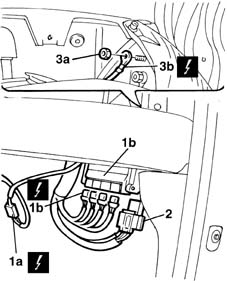
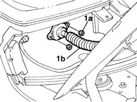
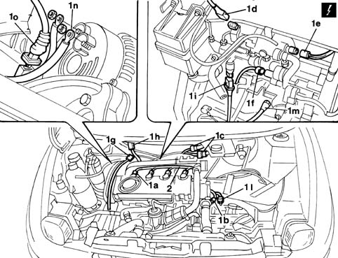

1060G90 diesel injection wiring harness - r r
- Path
- Procedures > 10 ENGINE UNIT > 1060 DIESEL FUEL INJECTION > 1060G pressure pump electric control > 1060G90 diesel injection wiring harness - r r
- Kind
- repair procedure (removal / refitting; the operation number is the code)
- Applies to
- engines: 1.9 JTD 8V; all production periods
- Interactive page
- https://sloeber94.github.io/elrnDB-fMltpl/en/#/2891421
Applies to: engines: 1.9 JTD 8V; all production periods
 Removing
Removing
 Refitting
Refitting7040A96 facia glove compartment flap (1) lh or rh - r r
5050B32 windscreen wiper arm/s - r+r
7055A18 Windscreen base TRIM - R.R.
1. Disconnect electrical connections (1a), disconnect the electrical connections from the injection control unit (1b).
2. Release the relays from the control unit mount.
3. Undo bolt (3a) and disconnect earth lead (3b) from the right side pillar.
 | Name | Connector |
|---|---|---|
1a | Accelerator pedal potentiometer |
| Name | Connector |
|---|---|---|
1b | Engine management ECU |

Applies to: engines: 1.9 JTD 8V; all production periods
1. Undo nuts (1a) and withdraw engine wiring (1b) from the passenger compartment. Fold the wiring into the engine bay away from the working area.

Applies to: engines: 1.9 JTD 8V; all production periods
1016A10 sound-proofing cover - r + r
1048A10 AIR CLEANER FILTERING ELEMENT - REPLACE
1080D34 engine oil vapour separator - r + r
1008C10 power unit upper reaction link r r
1008C16 body link bracket - r r
1. Disconnect electrical connections (1a), (1b), (1c), (1d), (1e), (1f), (1g), (1h), (1i), (1l), (1m), (1n) and (1o).
| Name | Connector |
|---|---|---|
1a | Injector |
| Name | Connector |
|---|---|---|
1b | Engine coolant temperature sensor |
| Name | Connector |
|---|---|---|
1c | Front/engine junction |
| Name | Connector |
|---|---|---|
1d | Turbocharging sensor |
| Name | Connector |
|---|---|---|
1e | Fuel temperature sensor |
| Name | Connector |
|---|---|---|
1f | Fuel pressure regulator |
| Name | Connector |
|---|---|---|
1g | Timing sensor |
| Name | Connector |
|---|---|---|
1h | EGR solenoid |
| Name | Connector |
|---|---|---|
1i | Fuel pressure sensor |
| Name | Connector |
|---|---|---|
1l | Speedometer sensor |
| Name | Connector |
|---|---|---|
1m | Brake fluid level sensor (switch) |
| Name | Connector |
|---|---|---|
1n | Alternator |
| Name | Connector |
|---|---|---|
1o | RPM sensor |
2. Remove the injection wiring from the engine bay.

Applies to: engines: 1.9 JTD 8V; all production periods
Refitting
RemovingPosition the injection wiring in the engine bay.
Connect the electrical connections.
| Name | Connector |
|---|---|---|
- | RPM sensor |
| Name | Connector |
|---|---|---|
- | Alternator |
| Name | Connector |
|---|---|---|
- | Brake fluid level sensor (switch) |
| Name | Connector |
|---|---|---|
- | Speedometer sensor |
| Name | Connector |
|---|---|---|
- | Fuel pressure sensor |
| Name | Connector |
|---|---|---|
- | EGR solenoid |
| Name | Connector |
|---|---|---|
- | Timing sensor |
| Name | Connector |
|---|---|---|
- | Fuel pressure regulator |
| Name | Connector |
|---|---|---|
- | Fuel temperature sensor |
| Name | Connector |
|---|---|---|
- | Turbocharging sensor |
| Name | Connector |
|---|---|---|
- | Front/engine junction |
| Name | Connector |
|---|---|---|
- | Engine coolant temperature sensor |
| Name | Connector |
|---|---|---|
- | Injector |
Fit the injection wiring to the bulkhead separating engine bay/passenger compartment by inserting the lead into the channel on the body.
Bring the wiring inside the passenger compartment and then connect the control unit electrical connections and the earth lead on the pillar.
| Name | Connector |
|---|---|---|
- | Engine management ECU |
| Name | Connector |
|---|---|---|
- | Accelerator pedal potentiometer |
Tighten the nuts securing the injection wiring flange to the body.
1008C16 body link bracket - r r
1008C10 power unit upper reaction link r r
1080D34 engine oil vapour separator - r + r
1048A10 AIR CLEANER FILTERING ELEMENT - REPLACE
1016A10 sound-proofing cover - r + r
7055A18 Windscreen base TRIM - R.R.
Topics linked from this page (24)
- 1008C10 power unit upper reaction link r r
- 1008C16 body link bracket - r r
- 1016A10 sound-proofing cover - r + r
- 1048A10 AIR CLEANER FILTERING ELEMENT - REPLACE
- 1080D34 engine oil vapour separator - r + r
- 5050B32 windscreen wiper arm/s - r+r
- 5530B10 battery - r+r
- 7040A96 facia glove compartment flap (1) lh or rh - r r
- 7055A18 Windscreen base TRIM - R.R.
- A10 Alternator
- D4 Front/engine junction
- K30 Brake fluid level sensor (switch)
- K45 Engine coolant temperature sensor
- K46 RPM sensor
- K47 Timing sensor
- K055 Accelerator pedal potentiometer ( FRONT )
- K81 Fuel temperature sensor
- K82 Turbocharging sensor
- K83 Fuel pressure sensor
- K84 Speedometer sensor
- L30 EGR solenoid
- M10 Engine management ECU
- N70 Injector
- N77 Fuel pressure regulator